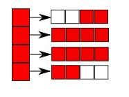

Martin Broadhurst > Data Structures
Deque
Contents
Introduction
A deque or double-ended queue is a data structure that allows efficient addition and removal at either end.
It may also support accessing elements by index, as this implementation does.
This deque is implemented as a dynamic array of fixed-size arrays.
The first array is filled from right to left, and the last one from left to right, as shown in the following diagram:

Creation
Create a deque with MBdeque_create.
Adding elements
Add at the head with MBdeque_push_front, and add at the tail with MBdeque_push_back.
Removing elements
Remove from the head with MBdeque_pop_front, and remove from the tail with MBdeque_pop_back.
Accessing elements
Access elements by array index using MBdeque_get_at and MBdeque_set_at.
Look at the first and last elements with MBdeque_peek_front and MBdeque_peek_back.
Get an iterator over the elements with MBdeque_iterator.
Example program
#include <stdio.h>
#include <deque.h>
typedef void (*addfn)(MBdeque*, void*);
typedef void*(*removefn)(MBdeque*);
void test(MBdeque *deque, addfn addfn, removefn removefn)
{
char * elements[] = {"A", "B", "C", "D", "E", "F"};
unsigned int i;
const unsigned int n = sizeof(elements) / sizeof(const char*);
MBiterator *it;
void *data;
for (i = 0; i < n; i++) {
addfn(deque, elements[i]);
}
printf("front is %s, back is %s\n", (const char *)MBdeque_peek_front(deque), (const char *)MBdeque_peek_back(deque));
it = MBdeque_iterator(deque);
while ((data = MBiterator_get(it))) {
printf("%s\n", (const char*)data);
}
putchar('\n');
MBiterator_delete(it);
for (i = 0; i < n; i++) {
data = removefn(deque);
printf("%s\n", data ? (const char*)data : "NULL");
}
putchar('\n');
}
int main(void)
{
addfn addfns[] = { MBdeque_push_back, MBdeque_push_front };
removefn removefns[] = { MBdeque_pop_back, MBdeque_pop_front };
const unsigned int nfns = sizeof(addfns) / sizeof(addfn);
MBdeque * deque = MBdeque_create();
unsigned int a, r;
for (a = 0; a < nfns; a++) {
for (r = 0; r < nfns; r++) {
test(deque, addfns[a], removefns[r]);
}
}
MBdeque_delete(deque);
return 0;
}
Source code
Download
The following archives contain the full source code, example programs and build instructions for all of the data structures: